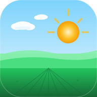

小数格式,如 / Decimal format, e.g. 4.04597, 101.96039
留空将使用GPS网格海拔 / Leave blank to use the GPS grid elevation
Paste your free Gemini API Key to enable AI features. Get one at aistudio.google.com → "Create API key". Stored only on this device.
输入您的名字，让这个 app 属于您。Enter your name to personalize this app.
中文、英文、马来文皆可 · Any language works · Max 40 chars
仅用于分享截图的文件名（ASCII 字母数字）Used only for shared screenshot filenames (ASCII letters/numbers)
每个地点的天气仍保持其设定语言Location content stays in each location's set language
Add your own farm spot / 添加您的地点